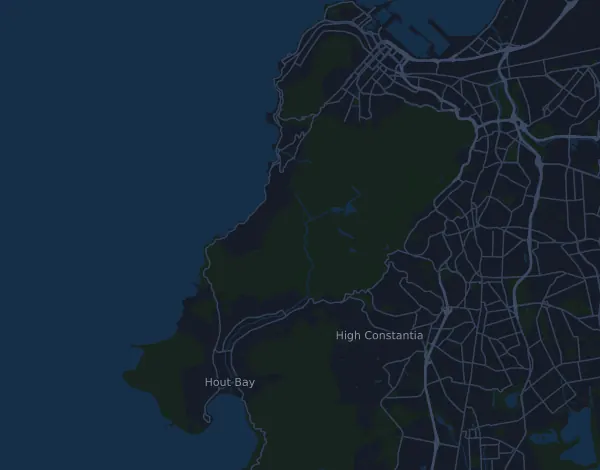

RMB Ultra-trail Cape Town – UT100 (Ultra-Trail 100km)
- Distance
- 97,9 km
- Højdemeter
- ↑ 6.239 m
- Højeste punkt
- 1.081 m o.h.
- Underlag
- Terræn og sti
- Karakter
- Bjergrig
- Start
- kl. 04:00
Højdeprofil
Forbered dig med Mila
Mila er en løbecoach i en app. Lægger du et løb ind i din plan, planlægger coachen ugerne frem til start efter din form og giver dig en tidsprognose og en plan for tempo, væske og energi på ruten.

Den rette træning. Den rette dag.
Ruten

Om ruten
RMB Ultra-trail Cape Town – UT100 (Ultra-Trail 100km) er et trailløb på 97,9 km i Cape Town (Gardens Rugby Club), Sydafrika. Ruten har 6.239 højdemeter stigning og 6.236 højdemeter fald, 64 m pr. km, og regnes dermed som bjergrig. Det højeste punkt ligger 1.081 m o.h. og det laveste 0 m o.h.
Den største stigning begynder ved km 45,2: 593 højdemeter på 4 km med 14,9 % i snit, op til 608 m o.h. I alt har ruten 51 stigninger på mindst 25 højdemeter; den sidste begynder ved km 92,3.
I Mila-appen beskriver coachen ruten i detaljer på dit sprog og planlægger dit tempo og din energi til den.
Stigninger
| Begynder ved | Længde | Højdemeter | Hældning | Top (m o.h.) |
|---|---|---|---|---|
| km 1,6 | 2,9 km | 102 m | 3,5 % | 164 |
| km 4,5 | 1,3 km | 62 m | 4,7 % | 217 |
| km 5,9 | 1,3 km | 101 m | 8,0 % | 312 |
| km 7,5 | 1,2 km | 164 m | 13,4 % | 464 |
| km 10,5 | 1,4 km | 66 m | 4,8 % | 346 |
| km 13,3 | 670 m | 33 m | 4,9 % | 214 |
| km 14,6 | 90 m | 25 m | 28,8 % | 213 |
| km 15,0 | 1,4 km | 113 m | 8,3 % | 266 |
| km 18,2 | 880 m | 37 m | 4,2 % | 220 |
| km 19,5 | 2,4 km | 336 m | 13,8 % | 519 |
| km 23,2 | 1 km | 253 m | 24,6 % | 749 |
| km 24,2 | 330 m | 125 m | 38,2 % | 857 |
| km 24,6 | 910 m | 219 m | 24,1 % | 1.069 |
| km 27,7 | 30 m | 33 m | 108,5 % | 1.052 |
| km 27,9 | 170 m | 85 m | 51,0 % | 1.005 |
| km 28,2 | 30 m | 47 m | 141,2 % | 960 |
| km 28,3 | 20 m | 48 m | 312,3 % | 955 |
| km 28,3 | 40 m | 42 m | 115,2 % | 948 |
| km 28,9 | 880 m | 95 m | 10,8 % | 972 |
| km 33,0 | 360 m | 58 m | 16,0 % | 733 |
| km 33,6 | 390 m | 27 m | 6,9 % | 728 |
| km 34,5 | 550 m | 78 m | 14,2 % | 752 |
| km 35,6 | 670 m | 47 m | 7,0 % | 708 |
| km 38,2 | 70 m | 27 m | 37,2 % | 488 |
| km 38,3 | 120 m | 55 m | 44,8 % | 501 |
| km 41,6 | 340 m | 27 m | 7,9 % | 31 |
| km 43,7 | 590 m | 26 m | 4,3 % | 32 |
| km 45,2 | 4 km | 593 m | 14,9 % | 608 |
| km 49,4 | 570 m | 58 m | 10,2 % | 592 |
| km 55,2 | 4,6 km | 218 m | 4,7 % | 224 |
Før start
Starttider
- kl. 04:00
Kilde: ultratrailcapetown.com, hentet 15. oktober 2026
Ofte stillede spørgsmål
Hvornår løbes RMB Ultra-trail Cape Town – UT100 (Ultra-Trail 100km)?
RMB Ultra-trail Cape Town – UT100 (Ultra-Trail 100km) løbes lørdag den 21. november 2026. Tjek dato og starttid hos arrangøren.
Hvornår starter RMB Ultra-trail Cape Town – UT100 (Ultra-Trail 100km)?
Ifølge arrangøren: kl. 04:00.
Hvor langt er RMB Ultra-trail Cape Town – UT100 (Ultra-Trail 100km), og hvor mange højdemeter er der?
Løbet er 97,9 km langt med 6.239 højdemeter stigning og 6.236 højdemeter fald. Det højeste punkt ligger 1.081 m o.h.
Hvordan er ruten på RMB Ultra-trail Cape Town – UT100 (Ultra-Trail 100km)?
Ruten regnes som bjergrig, med 64 højdemeter pr. km i snit. Den har 51 stigninger på mindst 25 højdemeter; den største begynder ved km 45,2: 593 højdemeter på 4 km. Start og mål ligger samme sted. Underlaget er terræn og sti.
Hvordan fordeler jeg farten på RMB Ultra-trail Cape Town – UT100 (Ultra-Trail 100km)?
Gå efter en jævn indsats frem for et jævnt tempo: lad farten falde på stigningerne, hent den igen, når det flader ud, og hold igen de første kilometer. De største stigninger begynder ved km 19,5, km 23,2, km 45,2 og km 89,5. I Mila får du en tempoplan til netop denne rute efter din egen form.
Flere løb som dette
Flere løb i nærheden
- Totalsports Two Oceans Marathon – Ultra Marathon 56 km4. april 2027 · Cape Town (Newlands), Sydafrika
- Sanlam Cape Town Marathon 42,2 km23. maj 2027 · Cape Town, Sydafrika
- Comrades Marathon 90 km13. juni 2027 · Pietermaritzburg, Sydafrika
- Big Five Marathon – 42.2 km19. juni 2027 · Entabeni, Sydafrika
Forbered dig med Mila
Den rette træning. Den rette dag.
Oplysningerne kommer fra rutefilen og arrangørens information. Tjek dato, starttider og regler hos arrangøren.
Mila er ikke tilknyttet, sponsoreret af eller godkendt af arrangøren eller løbets sponsorer. Navne og varemærker tilhører deres ejere. Arrangør eller rettighedshaver? Bed om ændring eller fjernelse